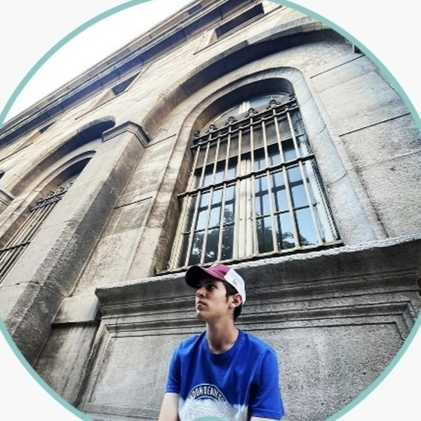

Jucător de tenis de câmp din Târgu Mureș — profil Sportya #53402, nivel Singles 6 · Doubles 5. În ultimul sezon a urcat de pe locul 7587 pe locul 190 în clasamentul Sportya.

Trei turnee, un singur sezon (iulie – septembrie 2025). Cu cât numărul e mai mic, cu atât locul din clasament e mai bun.
Calculat din meciurile oficiale înregistrate pe Sportya, iulie 2025 – martie 2026.
Toate meciurile de mai jos sunt cele înregistrate public pe profilul Sportya al lui Tudor Maris.
| Rundă | Adversar | Ranking adv. | Scor | Rez. |
|---|---|---|---|---|
| Sferturi | Cristian Rauta | #363 | 6-7, 2-1 (ab.) | L |
| Grupa D | Vili Noni Dragomir | #7644 | 6-4, 4-6, 10-7 | W |
| Rundă | Adversar | Ranking adv. | Scor | Rez. |
|---|---|---|---|---|
| Sferturi | Velichea Rareș Claudiu | #10405 | 2-6, 4-6 | L |
| Grupa D | Bogdan Andruș | #189 | 6-1, 6-4 | W |
| Grupa D | Bogdan Ormenișan | #8574 | 6-0, 5-7, 10-8 | W |
| Rundă | Adversar | Ranking adv. | Scor | Rez. |
|---|---|---|---|---|
| Finală | Norbert Costiniuc | #108 | 2-6, 4-6 | L |
| Semifinale | Paul Szengheli | #7 | 6-4, 0-6, 10-8 | W |
| Rundă | Adversar | Ranking adv. | Scor | Rez. |
|---|---|---|---|---|
| Finală | Vlad Grumăzescu | #336 | 0-6, 4-6 | L |
| Semifinale | Zoltán Bálint | #685 | 6-7, 6-4, 10-7 | W |
| Grupa C | Octavian Bălea | #10199 | 6-3, 6-3 | W |
| Grupa C | Sergiu Moldovan | #273 | 7-6, 6-4 | W |
| Rundă | Adversar | Ranking adv. | Scor | Rez. |
|---|---|---|---|---|
| Semifinale | Emiliano Silvestri | #46 | 3-6, 3-6 | L |
| Sferturi | Tudor Marica | #136 | 3-6, 6-1, 10-8 | W |
| Grupa D | Carol Crețu | #160 | 6-7, 6-4, 11-9 | W |
| Grupa D | Radu Trenca | #85 | 6-4, 6-3 | W |